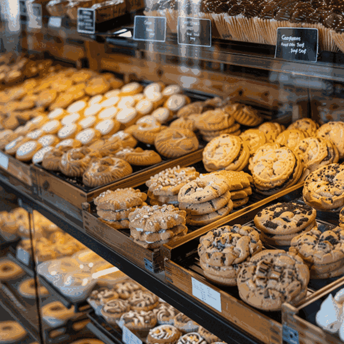
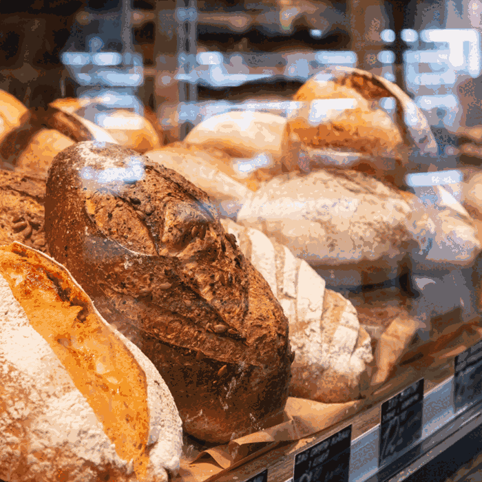

Slow-Risen Breads
Crusty loaves made with simple ingredients and given time to develop full flavor.
Handmade in the neighborhood
Welcome to North Star Bakery, where breads, pastries, and celebration cakes are prepared in small batches for local families, commuters, and special events.
Request a preorder
Local favorites
Crusty loaves made with simple ingredients and given time to develop full flavor.
Buttery croissants, seasonal danishes, and muffins ready for the morning commute.
Made-to-order cakes for birthdays, family gatherings, and community events.

Featured item of the week
A soft, hearty loaf finished with oats and a touch of local honey. It is a welcoming choice for breakfast toast, sandwiches, or sharing at the family table.
Available this week from $8
Explore all productsLocation: 18 Market Lane, North Star
Hours: Tuesday–Friday, 7 a.m.–6 p.m.; Saturday–Sunday, 8 a.m.–3 p.m.
Stop in for the day’s selection or contact us early for a preorder.
A short welcome message from the North Star Bakery team.